Applications are now closed! The IAYC 2022 has ended, the first info for the IAYC 2023 will become available around New Year.
The International Astronomical Youth Camp (IAYC) is a three-week long summer camp aiming to promote knowledge of astronomy and related sciences in a unique international atmosphere. It is organised by an international team of students and young scientists, all members of IWA e.V.
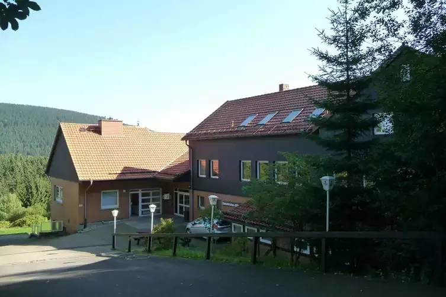
More detailed information about the IAYC in general, participants, the daily schedule and obsvering during the IAYC can be found in the About the IAYC section. We strongly recommend all prospective participants read this section as well as this First Info carefully! The PDF version of the First Info can be found here.
About the IAYC
The IAYC is a three-week long summer research camp aiming to promote the knowledge of astronomy and astronomy-related sciences in a unique and international atmosphere. Since the first camp in 1969, the IAYC has taken place in a different location in Europe each year. ~50 people come together from all over the world to live and work together on a project of their own choosing. Participants are 16–24 years old and all share a common interest: astronomy.
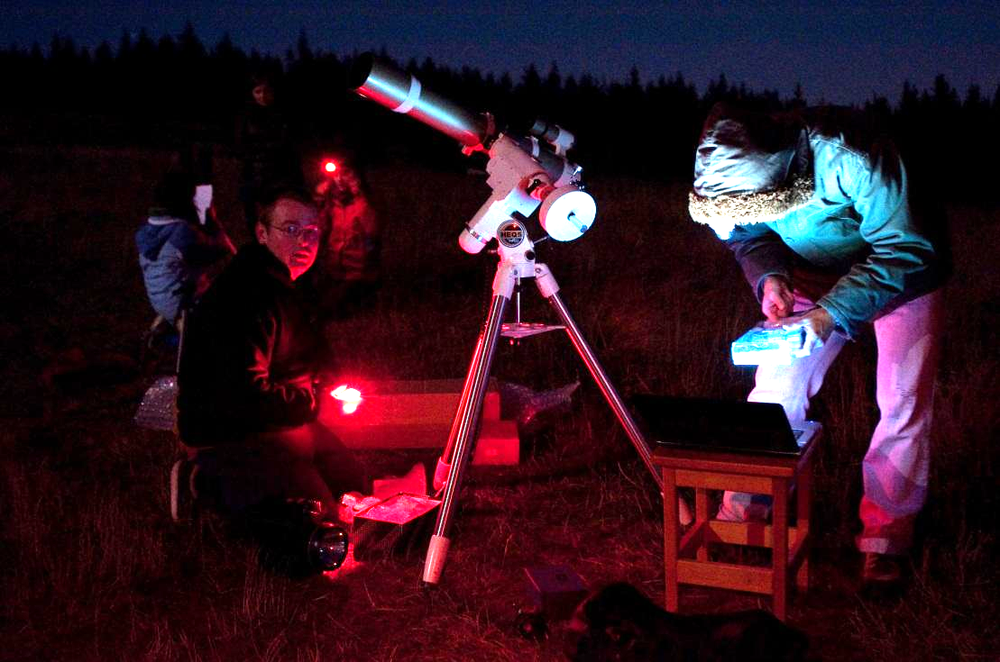
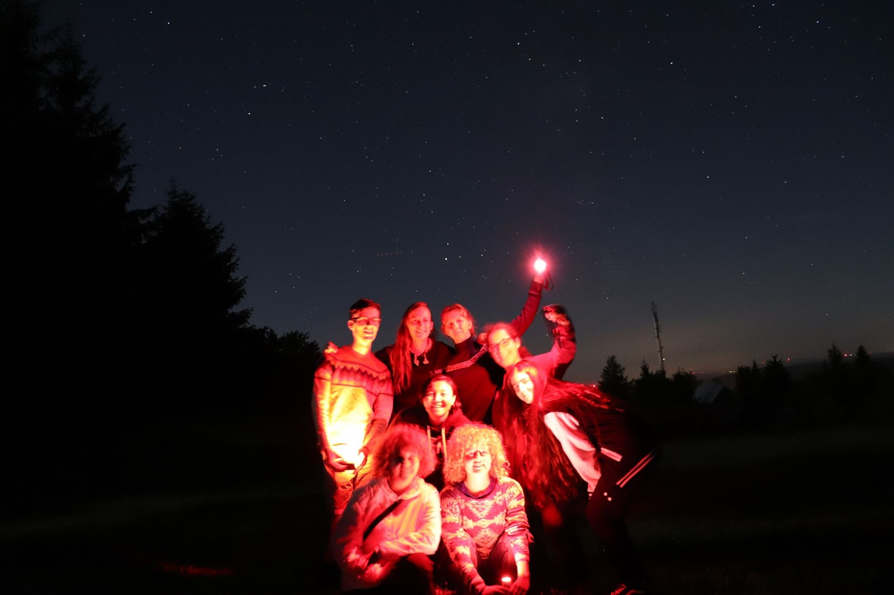
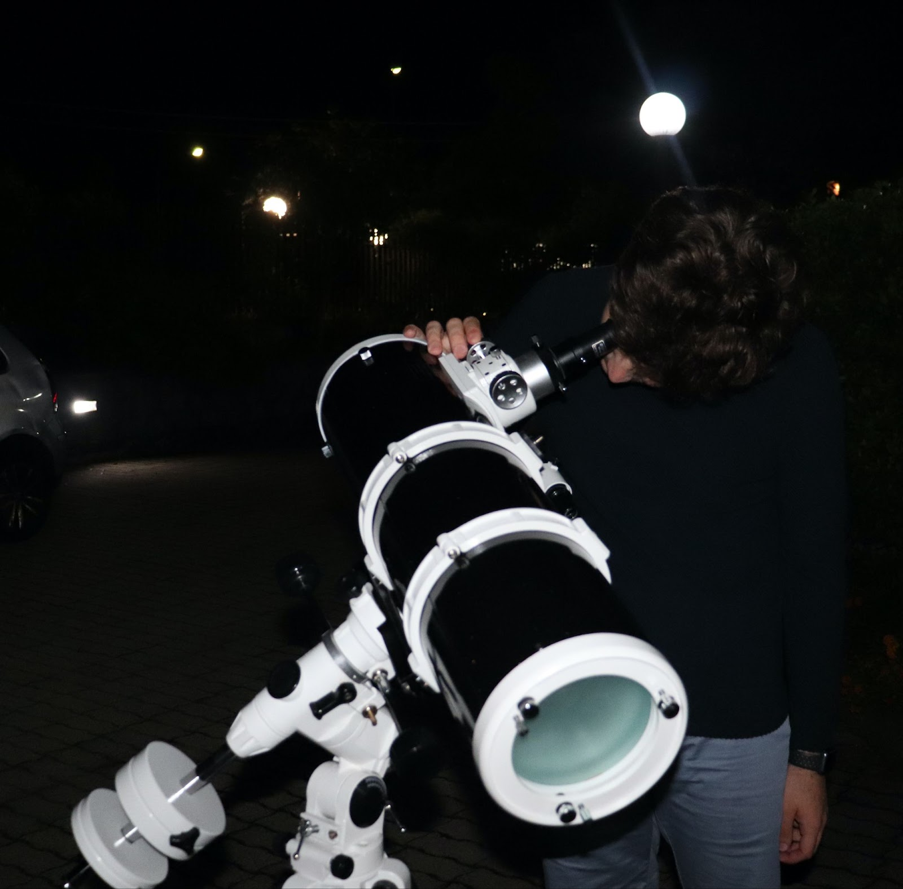
The IAYC is different from most astronomy camps for two reasons: (1) it has a strong international character and (2) you will design and carry out your own small research project. You will not just accept the facts, but you will discover them yourself while collaborating with others. We have had an incredible variety of projects over the past 50 years, including rocket and rover building; constructing radio telescopes; astrophotography; archaeoastronomy; machine learning; exoplanets; cosmology; astroparticles; and much, much, more.
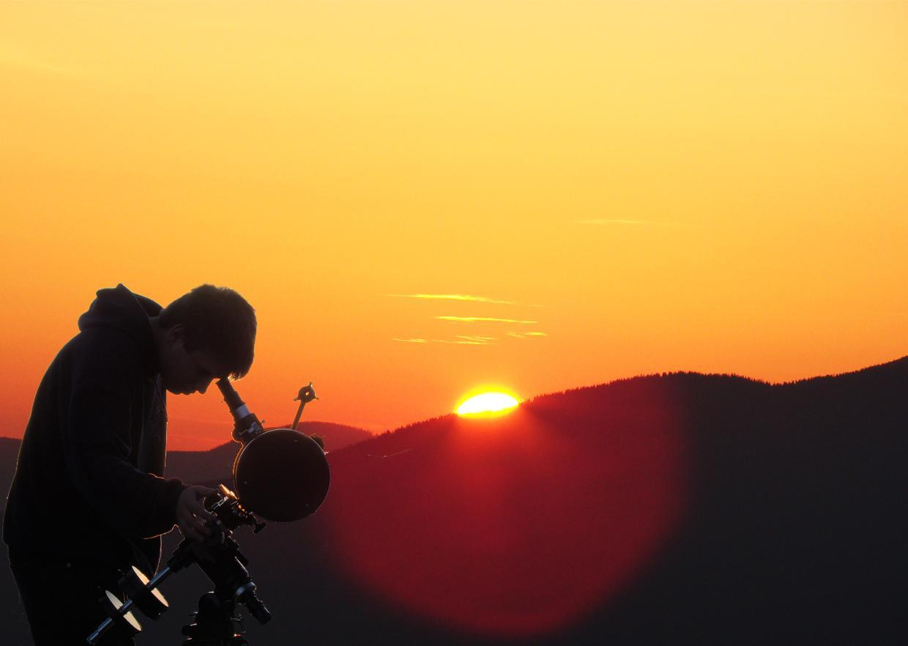
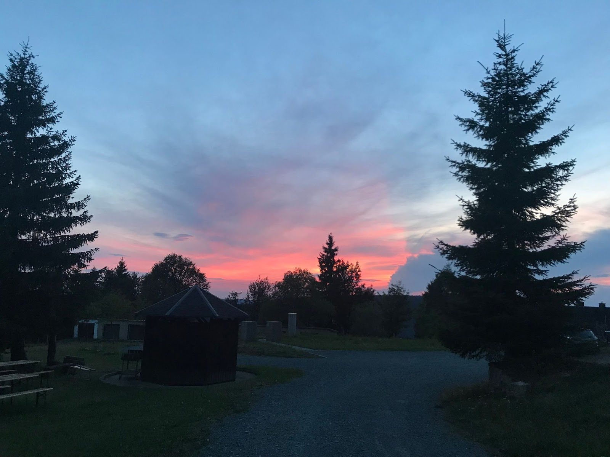
Celebrating diversity is deeply embedded in the culture of the camp — we are dedicated to making the camp accessible to all, and we especially welcome applications from underrepresented groups in STEM. Every participant, with their own cultural background, forms an integral piece in the complex puzzle that is camp life.
Participants
To participate in the IAYC you must be 16 to 24 years old (16 and 24 included) if you have never attended the in-person camp before. If you are 15 at the start and turn 16 during the camp, then this is fine; similarly, if you are 24 and turn 25 during the camp, then you may also apply. For the IAYC 2022, we will consider applications from previous camp attendees only up to age 26 due to the two years of missed in-person opportunities due to COVID-19. English is the language of the IAYC, so you’ll need to speak English throughout the entire camp. This makes it easier for everyone to share experiences, anecdotes and spend time together. Don’t worry if your English isn’t perfect, as long as you can have a normal conversation without a dictionary, you’ll be fine.
As an astronomy camp, science and astronomy should interest you — but prior experience isn’t necessary. We are looking for a willingness for you to carry out a small research project on your own, though your leader will always be there to support, orient and guide you and your project partners. You’ll also need to cooperate with others during the IAYC.
The IAYC’s international character is unique and enriched by a great variety of cultures. We celebrate diversity in an open and respectful environment, and often share our different perspectives on life. If you decide to apply, we encourage you to be open minded and embrace other’s views and opinions.
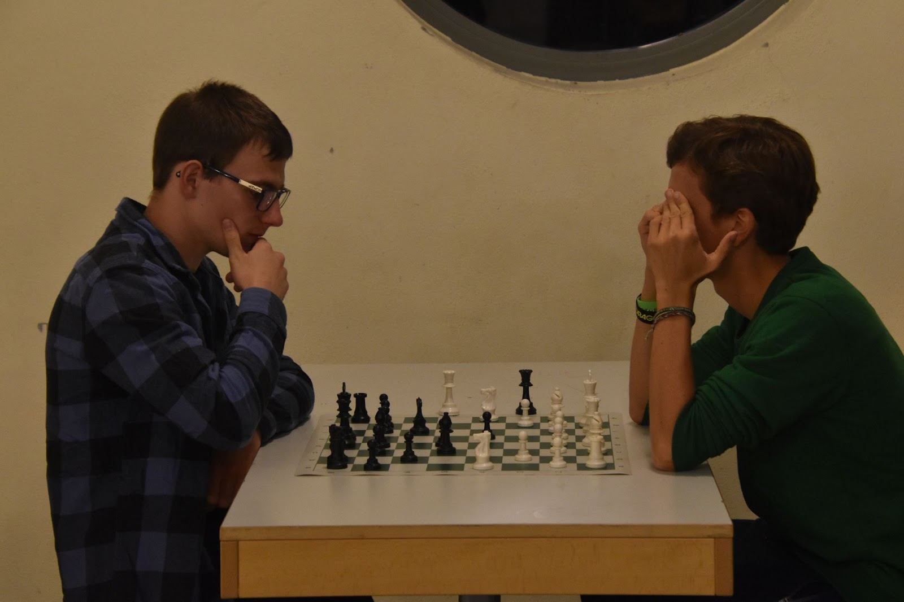
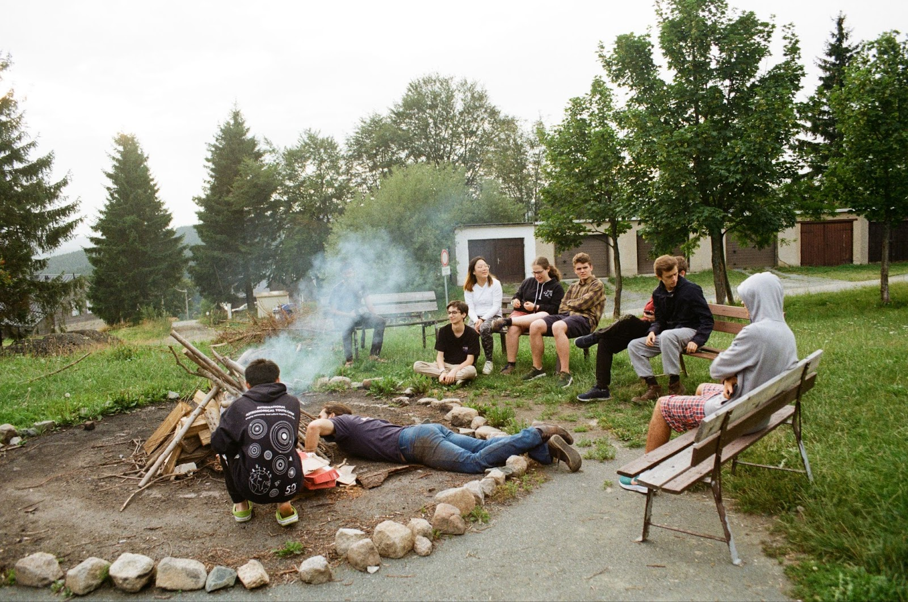
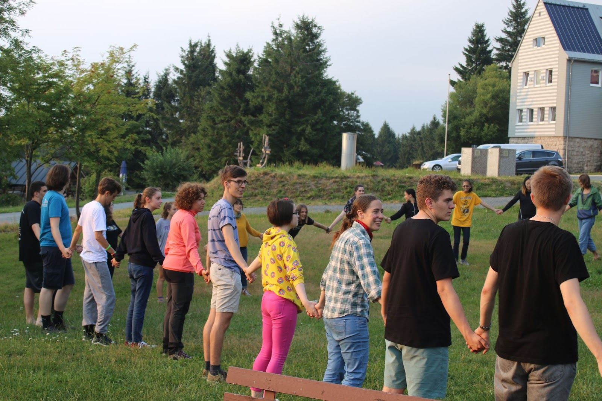
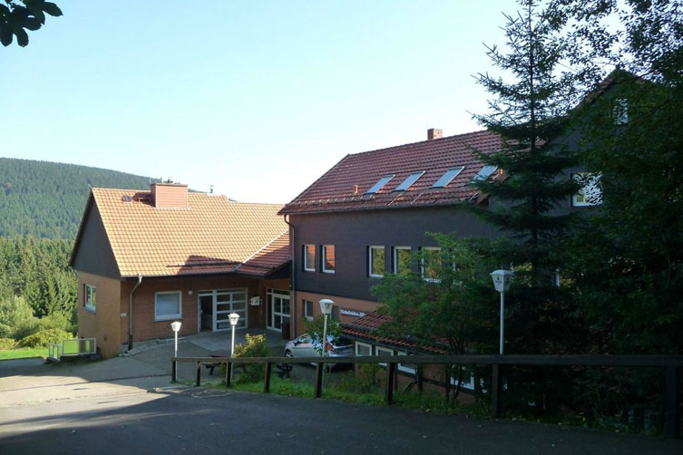
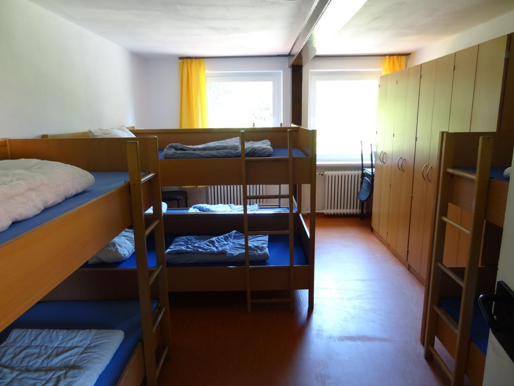
About the IAYC 2022: 17th July - 6th August
The IAYC 2022 will take place at Eichsfelder Hütte in Germany for the first time! The house is located in central Germany, east of Hanover and just outside of the town St. Andreasberg. It is also near the Harz National Park, surrounded by nature and wildlife.
The camphouse is well equipped to host us. The main building, which we will have exclusive use of, is a hostel style dormitory with bedrooms accommodating 1-8 people, multiple seminar rooms which we will use as our working spaces, and areas for socialising, exercising, and observing.
The house also has ample space for outdoor activities e.g. an outdoor and indoor ping-pong table, soccer field, terrace, and nearby meadows. The area is beautiful for hiking and even has a nearby lake (~1 hour walk).
Camp house: Eichsfelder Hütte
Address: Am Gesehr 38, 37444 St. Andreasberg, Deutschland
Latitude: 51° 43’ 22.0” N
Longitude: 10° 31’ 46.1” E
Altitude: ~705 m
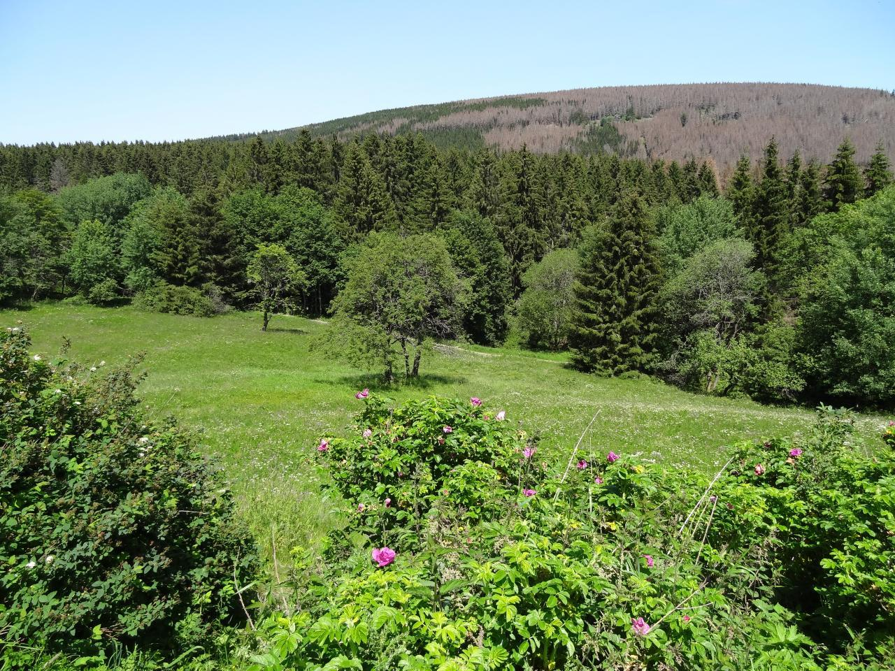
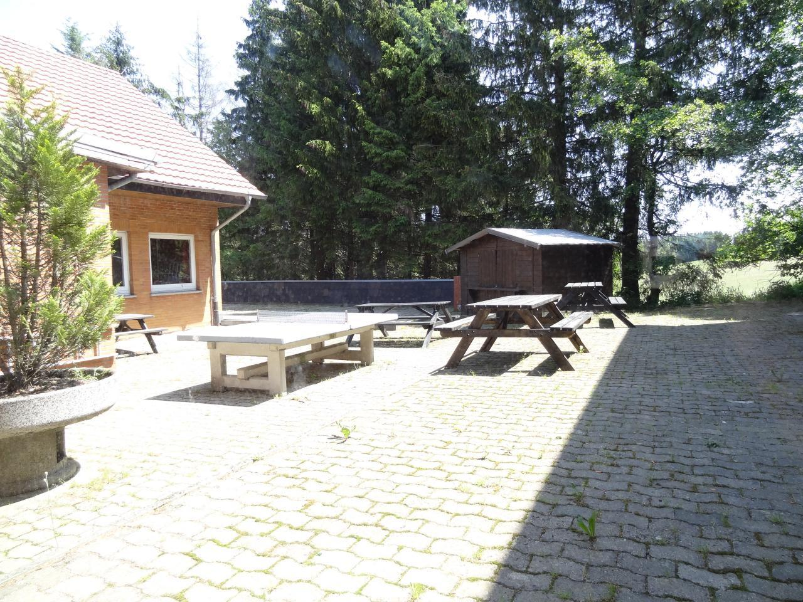
A few facts about Germany
Area: 357022 km²
Population: ~83.2 Million (2020)
Capital: Berlin
Major Cities: Hamburg, Munich, Cologne, Frankfurt/Main
Official Language: German
Currency: Euro (EUR) €
International dialing code: +49 / 0049
Travelling in Europe in general, and in Germany in particular, is very safe. Most Germans — especially the younger generation — are fluent in English, therefore communicating with the locals will not pose much of a problem.
Observing
Eichsfelder Hütte is located in an area of little light pollution, and therefore has very dark skies. Observing takes place during working group as part of your project, or after midnight meal when the telescopes are available for everyone. Catch a glimpse of a celestial object through a telescope or lie down in your sleeping bag and enjoy the view.
Don’t worry if you’ve never observed before, the leaders and other participants are always happy to show you how it’s done and offer support. Everyone has the chance to learn how to use a telescope.
Last but not least, we’ll also have a Dark Room. This means you’ll have the opportunity to take film pictures and learn to develop them yourself. You’re also welcome to bring your own telescope or binoculars. To see a current list of the telescopes and CCD cameras we have available, see our equipment list on the website.


The IAYC experience
Daily Schedule:
11:30 Waking up service
12:00 Breakfast
Free time
13:00-15:30 1st working group
Free time
17:30 Lunch
Free time
19:30 NAP
22:00-24:00 2nd working group
24:00 Supper
Observations / free time
An IAYC day starts with the 1st meal at noon (12:00), allowing for enough sleep after a long night out on the observation field.
Two daily working group sessions happen at 13:00 and 22:00. During working group sessions, you will work on a project of your choice. There are six different working groups to choose from with ~eight participants in each group, plus a leader. Collaboration is highly encouraged as projects are usually carried out in pairs.
You’ll read up on your topic with your partner, explain things to each other, carry out observations and calculations, take measurements etc. You should not expect a school-like environment where a teacher provides all the information and tells you what to do. But no stress, your leader will always be there to guide you if you get stuck. Projects are offered at all levels, from high school to university level. You’ll also write a report which will be compiled together into a report book, and sent to you after the camp.
Free time is for lectures, sports activities, workshops and social interaction. Workshops are often organised by participants, so feel free to organise one of your own!
At 19:30, the Non-Astronomical Programme (NAP) begins. Many different activities take place to help you socialise and take a break from work — and so, everyone is required to attend!
After the 2nd working group, a light meal is served at midnight. Then, if the sky is clear, it’s time to go out to the observation field and do what everyone loves to do: observe!
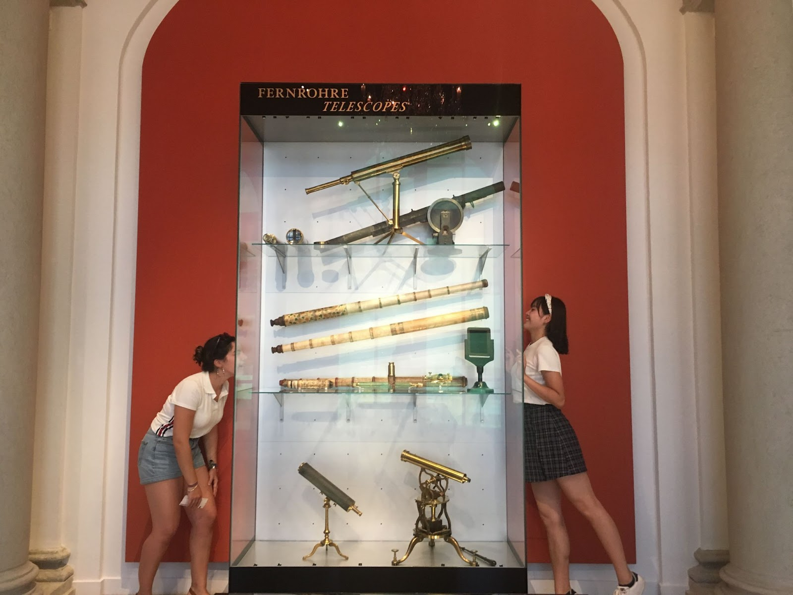
There are also two special days: Excursion Day: visit local attractions and learn something new! (This is included in the participation fee.) And Free Day: a day to be spent in any way you wish; go on a trip with some IAYC friends, catch up on some sleep, go hiking or swimming etc.
Participation
The participation fee is 870 EUR and the application deadline is 31st of March 2022. Applicants will receive an outcome at the end of April. If accepted, you’ll need to transfer the fee within seven days. (Don’t forget to check your spam — everyone who applied will hear from us, regardless of being accepted or not.)
You can withdraw your application at any time before we receive the participation fee. After that, we will refund you minus an administration fee of 50 EUR if you drop out before the 26th of June, and 100 EUR afterwards. If we can’t fill your place, we cannot refund you.
Grants
If financial reasons keep you from applying, we encourage you to seek support from our (limited) grant programme. You can fill out the grant form as part of the regular online application process.
This year we are able to offer additional grants for German citizens and/or residents, provided by the Wilhelm and Else Heraeus Foundation. Also, if you are a student at the XVth Gymnasium in Zagreb, Croatia, you can be considered for a full grant courtesy of Zaklada MIOC Alumni. Please fill out the grant section of the application if you meet either of these criteria. We may ask for proof of that you fulfill the eligibility requirements.
If you are not eligible for the above funding don’t forget the IAYC itself provides a limited number of grants open to all applicants. Please submit a camp application, along with a grant application.
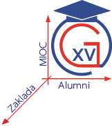
You should also try reaching out to organisations like the RAS, EPS or charitable agencies (e.g. Polish Children’s Fund, Swedish Astronomical Youth Association) that support young people doing research. Your school, university or workplace may also fund extra- curricular activities. If you can think of other ways or organisations that could support you, please try to explore them, as unfortunately our grant program is limited and we are unable to fund everyone.
The deadline for sending in a grant application is 17th of March 2022. Be aware that you will be asked to take part in a short 10 minute virtual interview if you are a grant applicant. If you have questions about the grant programs, please contact info@iayc.org.
Diversity
We are dedicated to making the camp accessible to all, and especially welcome applications from those belonging to minority groups. If you require time away from the schedule for prayers, or if you have any questions about accessibility please do not hesitate to let us know. You can also read our policy on diversity here.
COVID-19 precautions
In light of the ongoing COVID-19 pandemic, we will require that all participants of the IAYC 2022 be fully vaccinated by World Health Organization (WHO)-validated vaccines (see an updated list here). Unfortunately we cannot make exceptions.
We may also require COVID-19 testing upon arrival or during the three weeks at camp. We ask that all participants be flexible as guidelines may change as the situation evolves.
Choosing your Working Group
In the following section you can find the abstracts of the six working groups offered at the IAYC 2022. On the application form you will need to indicate which working groups you want to participate in. The NAP and GEN will also introduce themselves.
MESSY - Modelling Energy Systems SustainablY on exoplanets
Tags: energy, colonisation, design, modelling, practical, theoretical
Do you like lights? How about heat? Or rockets, electronics, the internet, cars, trains, planes, food, hospitals or sanitation? All of those things need energy to be created and to run, and a colony on another planet would need to do all of those things too! How would their energy system work? Would it copy Earth? Or would they use a new system altogether?
In MESSY, we’ll pick an exoplanet from a catalogue and use what’s known about it to design an energy system for a future human colony there. We’ll learn the basics of modelling. We’ll guess what future human civilisations will want energy for and propose how they might obtain it. Is there nuclear fuel on the planet? Do they need to worry about greenhouse gas emissions in their atmospheres? We’ll consider dozens of questions like this together, and see how the system we’re designing compares to Earth!
For a bit of practical application, we can build a wind turbine (or any other generation device – be creative) and measure its power output!
If you like planning, designing and creating things, MESSY is for you. We’ll combine existing knowledge with creativity to tell the story of the future of humanity’s energy as an interstellar species! We’ll also play endless games, drink our weight in tea, and discuss every topic imaginable.
Finnbar

Finnbar, the fair-headed one, is an Irishman you will never forget. This will be his first camp as a leader, but fear not! He has not one but two Masters (one in creative writing and the other in wind power) as well as a bottomless bucket filled with enough energy to create a supernova (actually, maybe you should fear him). If you end up in his working group you will undoubtedly learn a lot – on topics you never even knew existed – and be prepared to be exposed to a hazardous dose of unadulterated chaos. Don’t say I never warned you!
ODIN - Observing Distant Interstellar pheNomena
Tags: Astroparticle physics, theoretical, experimental, programming
Sitting on his throne Hlidskjalf in Valhalla, Odin looked upon the world in which he ruled. He wanted to know everything there was to know of it, and see all the worlds that were hidden from him. So strong was his desire, he sacrificed his eye in Mimir’s well, and in turn he could see visions and secret wisdoms previously unknown to even the immortal man.
In ODIN we will also observe what cannot be observed with the human eye. Using datasets from radio telescopes we can analyse faint and distant phenomena such as quasars and supernovae. With Python we can create simulations or models of the data which tell us the properties of the phenomena we observe. We will examine the constantly varying luminosities of Cepheid variables, the pulsating properties of pulsars, the redshift of distant galaxies or even the blackbody temperature of the Cosmic Microwave Background itself; the possibilities are endless!
May you be experienced in physics and programming or new, ODIN is guaranteed to have many fun projects in store for you! You need only to bring your favourite mug and a smiling enthusiasm for the cosmos, and I will provide you with all the coffee, tea, biscuits and exciting stories on Norse mythology you could ask for! See you in Germany!
Ruurd

If you didn’t apply for his working group, that would be Ruurd. Ruurd is a chill guy with a great sense of humour, he particularly appreciates puns on his name. Ruurd first appeared on the IAYC scene in 2018, and 2021 will be his first year as a leader in person. He has studied astronomy at the University of Groningen. Find him in free time to play a game of chess, or to chat about climbing or photography.
SHINY - Stellar birtH and evolutIoN, Yay!
Tags: stellar astronomy, nebulae, data analysis, programming
How do clouds of dust form into protostars then evolve into the literal powerhouses that host planets like ours? This working group will be everything related to star formation, and stars before their mid-life crisis; that is protostars and their early life on the main sequence. We’ll leave the old age for another year, this year is for the young.
Nebulae are loved by amatuer astronomers everywhere because of the incredible images they make. In those pictures stars are just beginning to start their lives. Are you interested in what theories limit the sizes of stars? How fundamental principles can be applied on an astronomical scale? Or are you more experimentally minded? What could you determine from real astronomical data?
We will be focusing on how astronomical images are turned into meaningful data that we can analyse. In general we will be programming for data analysis in Python, but don’t stress if you’ve never coded before I won’t throw you in at the deep end, and soon you’ll be surprised at how quickly you were able to pick it up.
If you have any questions or project ideas, reach out to me at carys@iayc.org even before applications are due.
Carys

If you have thoughts of joining this working group, you are assured to get the full experience with Carys! Now on her 7th camp and her second as leader, she has lots of knowledge of IAYC traditions to bring to the table! And not only is she a very bright physics and astronomy graduate; she is also a very skilled musician! And did I mention her skills in jujitsu? Or calligraphy? But most important of all: she is very good at making friends, and a camp with her is guaranteed to be worth your time!
SUS - SoUnds of the Stars
Tags: music, astrophysics, observing, data analysis, programming
In space, no one can hear you scream. In the working group room next door, they might.
When you think about astronomy, you probably don’t immediately think about how stars might sound. However, the Universe is surprisingly musical – full of resonances, vibrations and interesting variability. Did you know that with modern space telescopes like Kepler, TESS and the upcoming PLATO, we can actually “listen” to vibrations in the interiors of stars and use them to learn about their structure?
In SUS, you can explore the connections between music and space in any way you like. You could take a beautiful photograph of the Andromeda Galaxy with one of the camp’s telescopes and turn your image into sound using a process called sonification. You could learn about asteroseismology (star-quakes), or why some variable stars have brightness variations that look like cardiograms. You could investigate orbital resonances of planets in our solar system and beyond, or create an original piece of music using the exoplanet transits of TRAPPIST-1. You could research the historical and cultural connections between music and astronomy. There’s plenty of space to be creative and explore your ideas in SUS, whether you love observing, programming, making music, or researching new things.
In SUS, we’ll work hard but also play hard. You’re encouraged to bring along your favourite music and/or musical instruments (or borrow the camp guitar), and I’ll bring plenty of software, books, tasty snacks, hot beverages and my trusty ukulele.
See you in Germany!
Nikki

The incredible astrophysicist before yourself is Nikki! This endearing Brit is a PhD student at Keele University who is now a third-time leader at IAYC. She is developing an accurate method to measure the temperature of eclipsing binary systems. Wasn’t this impressive enough? She also takes part in astronomy outreach and is an incredible speaker! Smart as a whip, she is the grounded voice you’ll always want to listen to. And she will warm your hearts with her wonderful ukulele songs. Your trusted binary star specialist, you will always have a laugh by her side! Who wouldn’t want Nikki to be their leader?
T-REX - Training Robots to EXplore
Does space fill you with Curiosity? Are you interested in the Spirit of space exploration, and the Opportunity that it brings? Unfortunately the puns stop there because NASA didn’t care to give the rest of their rovers more convenient names. But wait, since I last tried to run this working group, Mars 2020 landed and I can now say: do you want to use Ingenuity and Perseverance to complete your IAYC project? Good job NASA.
In T-REX we will learn all about robotic space exploration using planetary rovers. Rovers are awesome. Using them we’re able to analyse the soil on Mars, sniff the toxic atmosphere of Venus and even take photos from the surface of comets (yes, I know Philae was a lander). Although rovers often carry different payloads depending on the mission (spectrometers, lasers, drills, etc), virtually every system has a bunch of cameras to give us eyes on an alien world. We can use images to navigate, reconstruct 3D models of terrain, identify interesting geology and help the rover avoid obstacles. Plus, of course, we can take pretty panoramas.
Let’s build one and explore der wald! But what will we actually do, I hear you ask? How about:
- Planning a robotic mission, making trade offs to achieve science goals when SWAP (Size, Weight and Power) are against you?
- Mapping an environment in 3D, localising the rover in the environment and overlaying sensor data?
- Using computer vision/machine learning to locate, classify and analyse objects in images
- Understanding how we control high-latency systems that are very far from Earth
This is a great opportunity to get involved with hardware hacking, computer vision and machine learning. We will be using Python for pretty much everything. Don’t be afraid if you know nothing (Jon Snow), you will learn!
#!/usr/bin/env python
import random
benefits = ['caffeine', 'food', 'good music', 'Josh', 'memes', 'robots']
print("Don't worry, there will be {} to keep you going!").format(random.choice(benefits))
Josh

Josh is the coolest dino on the block. His first camp was back in 2009, then he became a leader in 2011, and luckily for us, he is back for his 9th camp! Josh is one of those people who can fix any problem, especially if it involves machine learning, drones, telescopes, cameras, or the IceCube Neutrino Observatory! His work so far has taken him to Madagascar, Kenya, and the South Pole 🥶. You’ll currently find him in Zürich, saving the planet by applying machine learning to reforestation. So be sure to choose Dr. Josh as your leader, especially if you want to know what the IAYC was like in the prehistoric ages. 🦕
EXPANSE - EXPloring AstroNomy for Sustainable dEvelopment
Tags: astrosociology, sustainability, light pollution, theoretical, practical
Astronomy is the oldest science: for as long as homo sapiens have roamed the Earth, the night skies have been a source of awe, mystery and inspiration. Our studies of the heavens have influenced everything from culture to technology — if it weren’t for astronomy we wouldn’t have MRIs, 🐱 scans, Wi-Fi, GPS and more.
In 2015, the United Nations adopted the Sustainable Development Goals (SDGs) to address seventeen global challenges. Join me in EXPANSE to explore how astronomy can contribute to the Goals, and ultimately forge a sustainable future environmentally, economically, socially and culturally.
In EXPANSE, the stars’ the limit! How can an unpolluted sky create jobs and empower rural communities? Does astronomy help to recover and celebrate indigenous knowledge? Can astronomers foster cultural relations, preserve our dark skies and protect ecosystems? What is the carbon footprint of the camp, and how could we reduce it?
Let’s all put on our critical thinking caps and discover how we can use astronomy to make the world a better place! I’ll be here providing tea & biscuits, and emotional support for when the going gets tough and the camp gets going.
I hope you’ll be here with me too, Hannah
Hannah

Hannah is one of those people whose presence fills you with a kind of warm happy safety. Her conversations are filled with wisdom, her music taste is filled with 90’s and the extinction of the rest of her kind in the Cretaceous–Paleogene extinction event – that’s right, Hannah is a dino, with her first camp being in 65,000,000BCE 2011 when some of you were only 6 years old. She became a leader in 2014 and has been warming our hearts ever since. Hannah has a PhD in star movement and works to help discover how astronomy can help people through education and jobs, having worked previously in the European Southern Observatory, and done loads of adulting stuff like talking at conferences and being a very cool and important big grown up person.
NAP - Non-Astronomical Programme
There’s probably nothing better than a NAP after lunch, especially if you’ve spent your night chasing constellations and observing with a telescope. So grab your isomat and sleep mask (any other blindfold will do, of course) and let‘s go!
I‘m not talking about a giant slumber party, though, sorry to disappoint. But trust me: when your code isn‘t working, LaTeX just won‘t put the image in the right place or science/computer-failure/clouds-induced frustration is driving you mad - NAP is just what you need!
Ok, so what is this mysterious NAP, you ask?
There is no formula for NAP: it can be sixty people from all over the world running around and making weird noises. It can be reading your favourite poem in a candlelit room or performing an instrument or song you enjoy. It can be tasting foreign food and learning about another culture. It can be throwing eggs out the window and trying to make them survive the fall.
But one thing it is for sure: it‘s the time when you can forget about your project and just have fun!
Sounds good, but now you are afraid that this incredibly cool group might be full and you won’t get a spot?
Don’t worry: NAP is for everyone.
As NAP leader, I will not only make sure the chaos doesn‘t overtake, but I’ll also make sure you‘re awake in time for breakfast and supplied with all the materials you might want for your project.
Can‘t wait to see you all at IAYC 2022 when the morning has broken!
Wanda

Wanda is one of the most unique and genuinely kind people you will have the joy of meeting at IAYC. This leader hails from Germany, and her first camp took place in 2015. It will be her second year as a leader and she is sure to give us all a wonderful time as NAP. She is pursuing a double bachelors in biology and physics and is especially interested in sustainable living. You can find her walking barefoot through nearby nature or headbanging at a metal party: she is relaxed in any environment and so easy to get to know!
GEN - General Coordinator
So you’re wondering what the General Coordinator of the IAYC does, right? It’s easy to miss how much work goes on behind the scenes to make sure camp runs smoothly and everyone has a great time.
As the GEN it’s my job to make sure everything is working right from start to finish. You need transportation to and from the camp? Let me get you a bus. You need hot food and all the tea and coffee you can lay your hands on when we get up at midday? I’ll be constantly keeping up with the staff of the house to keep us fed and watered. You can’t fit enough clothes for 3 weeks of camp into your suitcase (for some reason)? I’ll see to it that we can do at least some laundry during the camp, just don’t count on weekly washes.
Aside from the day to day running of the camp it’s also my job to handle any problems that come up. Water not running, the heating/cooling is broken, your leader is missing/sick, and anything else you can think of. It’s up to me to deal with issues as they arise so that you don’t have to, and find solutions that keep things feeling seamless and smooth.
Nothing will keep me from delivering daily announcements and safeguarding your camp experience against all misfortune.
At the camp, I am your first port of call if you have any issues and I’m always happy to help so please come knock on my door any time. Just remember to ask your common sense if you can deal with it first since there is a camp to run after all.
Can’t wait to see you all in Germany!
Mel

This wonderful, sunny person is Mel! You’ll easily recognize her at camp lighting up every room with her smile and making sure everything runs smoothly. This camp will be her 6th camp, 4th as a leader and 1st as GEN. Mel grew up in California and is now doing a PhD at the University of Illinois Urbana-Champaign. Even though she will be busy managing the camp, don’t miss the opportunity to talk to Mel because she is not only an amazing scientist, but also a great listener and someone who always has advice at hand. With Mel as GEN you’re guaranteed to have an amazing time!
Your application for the IAYC 2022
If you want to participate in the IAYC 2022, complete the application form on our website. Please read the instructions carefully. We will also require from you, or your legal guardian if you are not yet 18 (21 in some countries), to sign a consent form to download when finalising your application. Please do not forget to send us the consent form, without it your application is invalid!
Make sure you read the terms and conditions. Please note that you are obliged to have health insurance which is valid in Germany for the duration of the camp. If we decide to accept your application you will need to send a copy of your insurance certificate to us (e.g. travel insurance certificate, European Health Insurance Card, etc.).
The consent form needs to be signed and sent by regular post to:
IAYC 2022
c/o Aitor Aldama Campino
Professorsslingan 39, lgh1104
114 17 Stockholm
Sweden
You will be informed about your acceptance by the end of April 2022. If accepted, you will need to transfer the applicable participation fee within seven days of receiving the acceptance email.
If you need to apply for a VISA to enter Germany please contact the German embassy or foreign office in your country as soon as possible to find out what documents you will need. You should also make an appointment for your visa application by May, even if your application has not yet been accepted. Organise this ASAP!
Once you have been accepted we will provide a letter of invitation if you need one — please find out what details this letter should contain and contact us at least 2 weeks before your appointment at the embassy! Apart from the letter of invitation, obtaining a visa is solely your responsibility.

Travel to the IAYC
Please note that we cannot make travel arrangements for individual participants. Travel to and from the camp is the sole responsibility of the participant. It is the sole responsibility of the participant to ensure that their travel plans comply with any COVID-19 related requirements throughout their travel journey.
After acceptance, we will share the Second Info booklet with you. It will contain more detailed information on how to travel to the camp. Additionally, you will be able to contact other participants and arrange travel to the camp together.
Please do not hesitate to contact info@iayc.org or any one of us should you have any questions!
We look forward to receiving your application and to seeing you in Eichsfelder Hütte,
Mel, Wanda, Ruurd, Roger, Carys, Nikki, Finnbar and Hannah

Supporters of the IAYC
We are very grateful to the following organisations for their sponsorship towards the eIAYC 2020 and 2021. If you are interested in sponsoring us and would like your organisation to be listed here, please contact us at sponsorship@iayc.org.
- Gather.town
- Nature Astronomy
- International Astronomical Union – Office of Astronomy for Development (IAU OAD)
- Copernicus – Open Access Publications
- Planetarium Wien
- HGS Astronomical Society
Furthermore, we would like to also thank the supporters of the IAYC 2022:
- Wilhelm und Else Heraeus-Stiftung
- Copernicus – Open Access Publications
- Planetarium Wien
- Zaklada MIOC Alumni